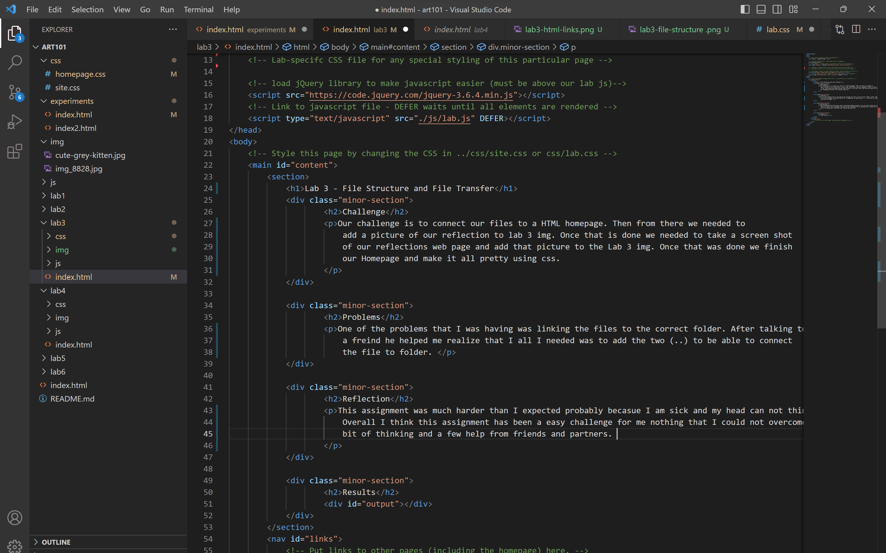

Lab 3 - File Structure and File Transfer
Challenge
Our challenge is to connect our files to a HTML homepage. Then from there we needed to add a picture of our reflection to lab 3 img. Once that is done we needed to take a screen shot of our reflections web page and add that picture to the Lab 3 img. Once that was done we finish our Homepage and make it all pretty using css.
Problems
One of the problems that I was having was linking the files to the correct folder. After talking to a freind he helped me realize that I all I needed was to add the two (..) to be able to connect the file to folder.
Reflection
This assignment was much harder than I expected probably becasue I am sick and my head can not think right. Overall I think this assignment has been a easy challenge for me nothing that I could not overcome with a little bit of thinking and a few help from friends and partners.
Results
File Structure
HTML Links
Refection
